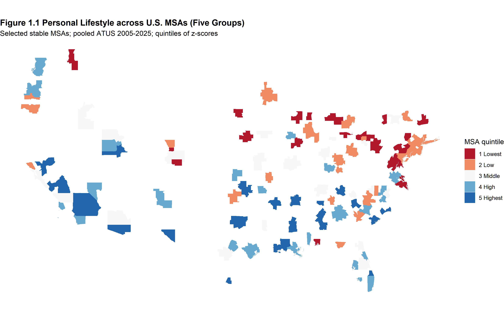
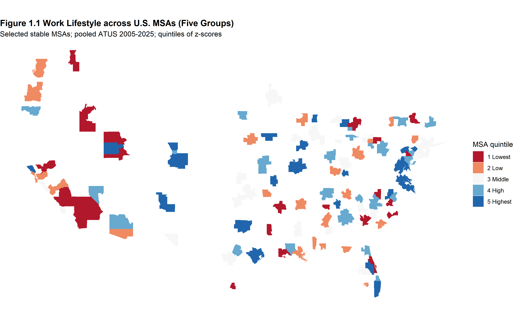
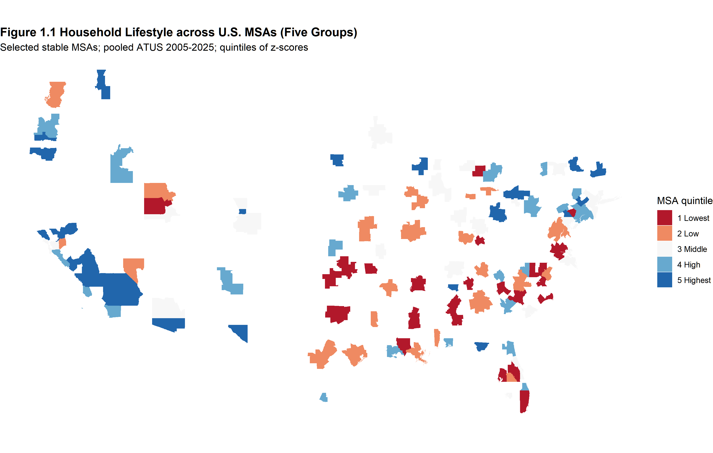
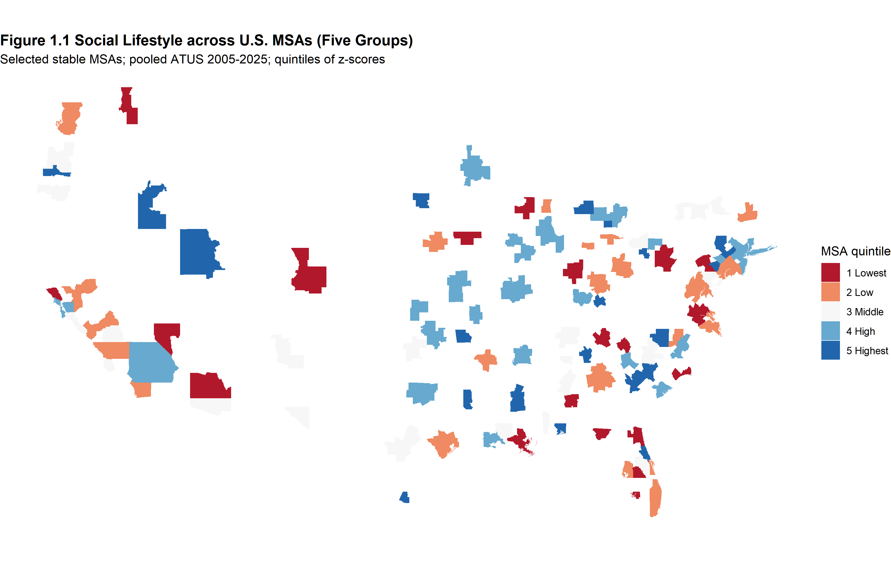
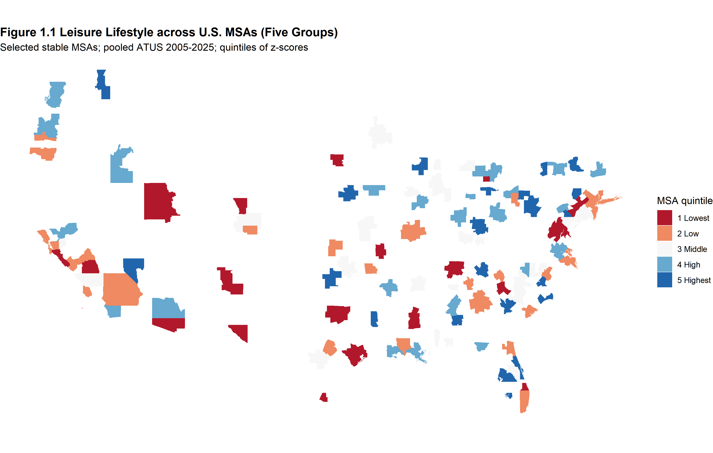
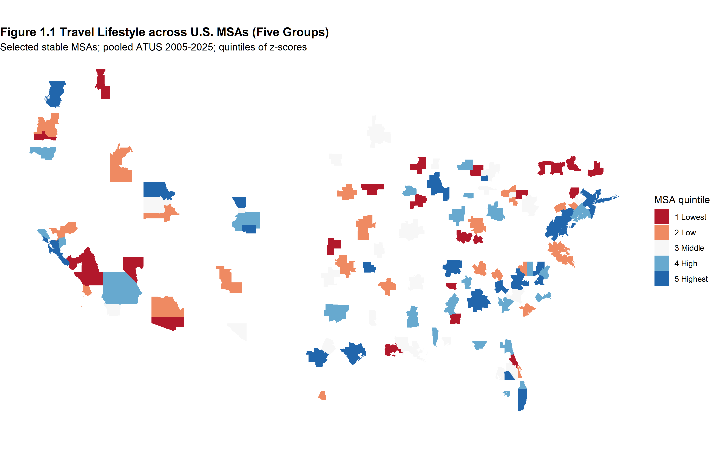

02 / RESEARCH BLOG / PEOPLE · PLACES · YEARS · MIGRATION
Different people.
Different places.
Different days.
We all have 24 hours. How we use them varies across life stages, cities and time. What happens when people move between those different ways of life?
A city offers more than jobs and housing. It also offers a setting for everyday life: working, caring, socializing, relaxing and getting around. Our project starts by measuring those activities, then asks how migration connects people to places with different daily rhythms.
The American Time Use Survey (ATUS) supplies 215,479 daily diaries from 2005–2025, excluding 2020. We organize time into six broad activity groups, retaining unclassified time so every day still adds up to 24 hours.
What counts as each lifestyle?
| Lifestyle | Everyday examples |
|---|---|
| Personal care | Sleeping, washing, dressing and self care. |
| Work & education | Paid work, job search, classes and homework. |
| Household | Cooking, cleaning, caregiving, shopping and services. |
| Social | Socializing, parties, religion, volunteering and phone calls. |
| Leisure | Eating & drinking, TV, reading, hobbies and exercise. |
| Travel | Commuting and trips for shopping, care or leisure. |
We group ATUS activities into these six categories. Personal care includes sleep and other self care. The colors follow the figures below.
Lifestyle Categories · examples & codebook →01 / PEOPLE
A day looks different at different ages.
Age provides the clearest place to begin. In the recent diaries, people aged 35–44 average 4.7 hours of work and education a day, compared with 0.3 hours among those aged 75 and over. Leisure runs in the opposite direction: 4.3 hours at ages 35–44 and 8.2 hours at 75+.
The other activities add texture. Household time is highest at ages 65–74, at 3.6 hours a day. Travel averages 1.1 hours at ages 45–54, compared with 0.7 hours at 75+. Personal care follows a shallower U-shaped pattern. A single label such as “more free time” would miss these different combinations.


Age is only one part of the story. Women average 3.5 hours of household activity a day, compared with 2.3 hours for men. People in households with three or more children under 18 average 3.7 hours, compared with 2.7 hours in households without children. Education and income groups also have different daily budgets.
See sex, education, income and household comparisons

Observed means, 2021–2025. ¹ Education comparisons cover ages 25+; other comparisons cover ages 15+. Income is nominal annual family income, not personal earnings. Groups differ in other characteristics, so these are descriptive differences. Download values and sample sizes →
02 / PLACES
There is no single metropolitan lifestyle.
Differences between cities could simply reflect who lives in them. The original spatial analysis therefore adjusts for observed demographics, survey year and diary weekday before comparing metropolitan activity scores.
The six maps reveal a mixed geography. Travel scores are relatively high in many metros along the northeastern seaboard and parts of the West Coast. Personal-care scores tend to be higher in parts of the South and Southwest. Work, household, social and leisure activity form other combinations. A metro can rank high on one dimension and low on another.


Personal care Open original ↗

Work & education Open original ↗

Household Open original ↗

Social Open original ↗

Leisure Open original ↗

Travel Open original ↗These are the original study’s selected metros, with consistent observations and sufficient diaries across rolling windows. The profile tools elsewhere on this site include a wider set of areas; small samples and historical boundary differences still matter. The maps establish the spatial contrasts that the migration analysis builds on.
Explore the wider interactive geography →03 / YEARS
The national day has changed, too.
Between 2005 and 2025, observed personal-care time rises by 0.38 hours a day, leisure rises by 0.25 hours, and travel falls by 0.22 hours. Social activity falls by 0.15 hours. These broad changes span the years before and after the pandemic interruption; they do not describe time at home directly.
Population composition also changes. The orange dashed series applies the fitted activity model to a common reference population and calendar. The observed work-and-education decline is 0.30 hours, but the standardized decline is only 0.06 hours. Leisure’s increase falls from 0.25 to 0.09 hours after standardization. Travel still falls by about 0.27 hours.


The comparison matters: a change in the national average can combine shifts in who is surveyed with differences associated with the year. Standardization separates these descriptively under the model. It does not identify a causal period effect or follow the same people for twenty years.
Compare the 2005–2025 changes in hours
| Activity | Observed 2005 | Observed 2025 | Observed change | Standardized change |
|---|---|---|---|---|
| Personal care | 9.41 | 9.79 | +0.38 | +0.38 |
| Work & education | 3.81 | 3.51 | −0.30 | −0.06 |
| Household | 2.99 | 2.95 | −0.03 | +0.00 |
| Social | 1.12 | 0.97 | −0.15 | −0.16 |
| Leisure | 5.25 | 5.50 | +0.25 | +0.09 |
| Travel | 1.26 | 1.04 | −0.22 | −0.27 |
04 / MIGRATION
Where people move differs by age, education and income.
Do older and younger people move to the same kinds of places? What about people with different education and incomes? We study 189,114 adults who moved between U.S. metropolitan areas, using the American Community Survey (ACS), 2015–2019 and 2021–2024.
For each move, we compare the new city’s lifestyle scores with those of the city left behind. We then ask how that difference varies between groups, accounting for where people started, the survey year and other measured characteristics.
AGE
Older movers tend toward a different mix of daily activities.
Compared with movers aged 18–24, older groups show a stronger shift toward places with more personal care and leisure, and less social activity and travel. The travel difference is largest at ages 55–64, then narrows at 65+. Work differences by age are small and uncertain.
Values at 65+
Hover over a group, or use “Read values for” to see its scores. Reference: Ages 18–24 = 0. All three charts use the same scale.
EDUCATION
Graduates’ moves point toward more work and travel.
Compared with movers who have less than high-school education, those with a bachelor’s degree or higher show a stronger shift toward places with more work and travel, and less household activity and leisure. Personal-care and social differences are less clear. Not every activity changes steadily with education.
Values at Bachelor’s or higher
Hover over a group, or use “Read values for” to see its scores. Reference: Less than high school = 0. All three charts use the same scale.
PERSONAL INCOME
Higher-income movers show a similar pattern.
As personal income rises, work and travel differences become more positive, while household and leisure differences become more negative at the higher income levels. The clearest combination appears among movers earning $100,000 or more. Income here is the mover’s personal income, unlike the family-income comparison earlier.
Values at $100k+
Hover over a group, or use “Read values for” to see its scores. Reference: Below $25,000 = 0. All three charts use the same scale.
Figures 4a–c use the original adjusted migration estimates; hollow points mark the reference groups. Each move is matched to ten-year ATUS city profiles ending in the previous year. Download the plotted values →
Daily habits and moving patterns answer different questions. Older adults’ lower travel hours describe their own days. The age lines above describe the places older movers connect, compared with younger movers. They do not measure what a particular person gained by moving, or prove why anyone chose a destination.
Jobs, housing, family and preferences may all contribute. Accounting for destination population and density makes the education and top-income travel differences substantially smaller. The precision of the city lifestyle scores also varies.
See the full migration results and statistical details →THE RESEARCH QUESTION
How do people and places come together in everyday life?
The demographic profiles show whose days differ. The maps show where lifestyles differ after adjustment. The annual series show how the national day has changed. Actual moves then reveal how people of different backgrounds connect those places. Together, they provide a way to study migration through the activities that make up daily life.
LIFESTYLE CATEGORIES / A READER’S GUIDE
Lifestyle Categories
Here is what goes into the six labels used throughout the figures. These examples come from the ATUS Activity Lexicon, 2003–2025. Click an activity code to see its original codebook page.
Personal care
Sleep, getting ready and other self care. Personal-care hours combine these activities.
Work & education
Paid work, work-related tasks, job search and education, including classes and homework.
Household
Domestic tasks, care for children and adults, shopping and obtaining services, including care outside the household.
Social
Connecting with other people, social events, religious activities, volunteering and telephone calls.
Leisure
Meals, relaxation, entertainment, hobbies, arts, sports and exercise.
Travel
Time spent traveling, classified by the purpose of the trip: work, education, errands, care or leisure.
Sleep → Personal careThe group also includes washing, dressing and self care. Its total is broader than sleeping time.
Eating → Leisure · Cooking → HouseholdOrdinary meals count as leisure; preparing food and washing dishes count as household activity.
Commuting → TravelGetting to work counts as travel. Time spent doing the job counts as work & education.
The six groups are our study’s aggregation of BLS activity codes. The code and its context determine the group: eating as part of a paid job, for example, is work & education. Unclassified minutes are kept separately so the full daily budget adds up to 24 hours.
SOURCES & DOWNLOADS
Read the figures, explore the data.
People and annual means come from saved ATUS estimates; all new charts use the existing results. Spatial maps and migration coefficients retain the original study’s estimates. No model is refitted for this blog.
Data, measurement and uncertainty
ATUS: ages 15+, 2005–2025 excluding 2020; final survey weights. Recent demographic profiles pool 2021–2025 with weights normalized within national year; education comparisons use ages 25+. Time charts display hours per day; the underlying daily budget remains 24 hours. Annual standardization holds the exported v3 model’s 2,048-profile recent reference population and 2025 calendar fixed while changing year.
Original maps: 121 selected identified MSAs, 120 boundary matches, pooled original adjusted standardized scores. Selected areas have observations in each year and at least 100 diaries in each ten-year window. Migration uses prior-year rolling profiles, separate origin/destination geographic crosswalks, strict matching and complete cases; ACS income is personal income, unlike ATUS family income.
Descriptive charts show observed or standardized means, without trend significance tests. Migration charts show the original adjusted group estimates, with reference categories set to zero; connecting categories does not estimate continuous aging, education or income trends. The 66 tests exclude the reference zeros. Full original statistical results remain on the Lifestyle Migration page. Metropolitan-score split-half reliability is modest (activity medians about 0.11–0.40). Repeated cross-sections do not establish individual aging, causal moving effects or preferences. Historical metro boundaries and sparse local samples further limit interpretation.


BLS · American Time Use Survey
Census Bureau · ACS PUMS
A1 · Full data, activity definitions, models and limitations
A2 · Predictive validation
Research blog. The existing manuscript and author information remain available separately.